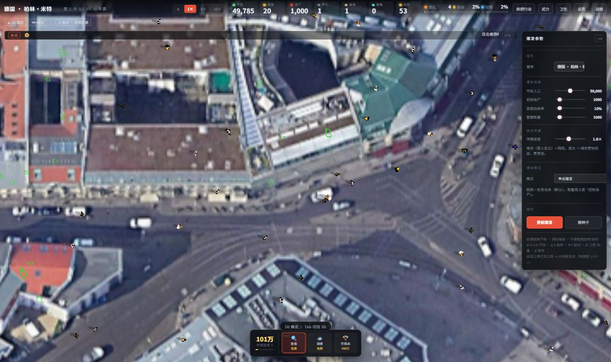
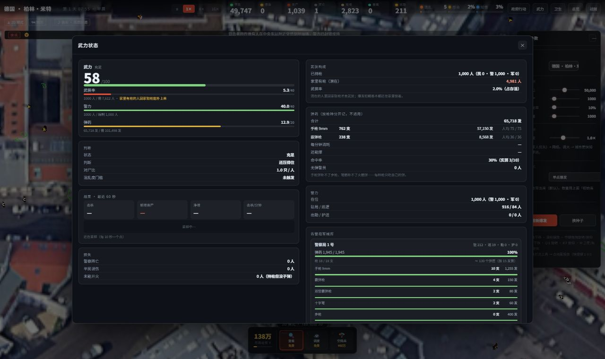
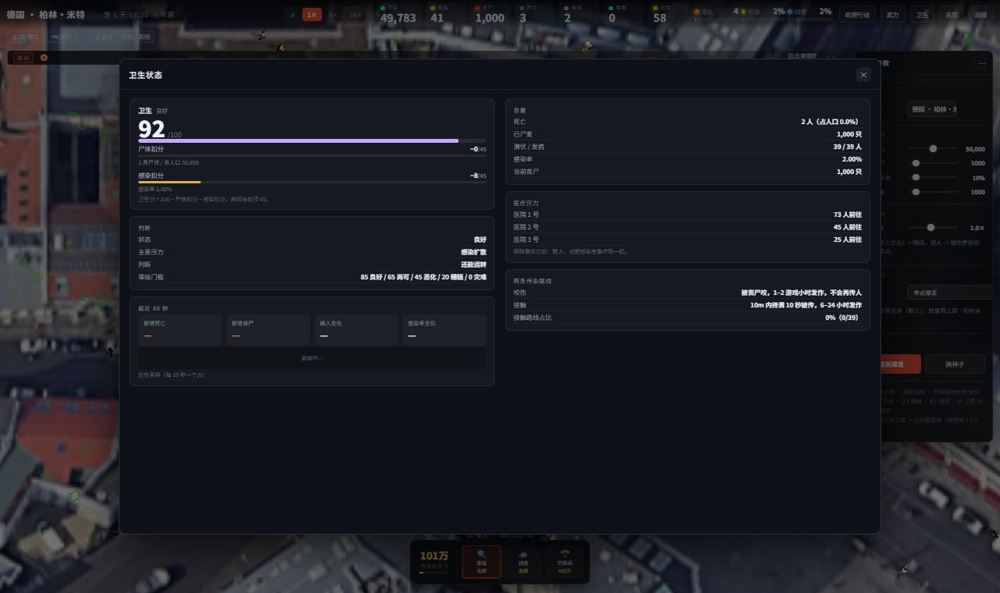
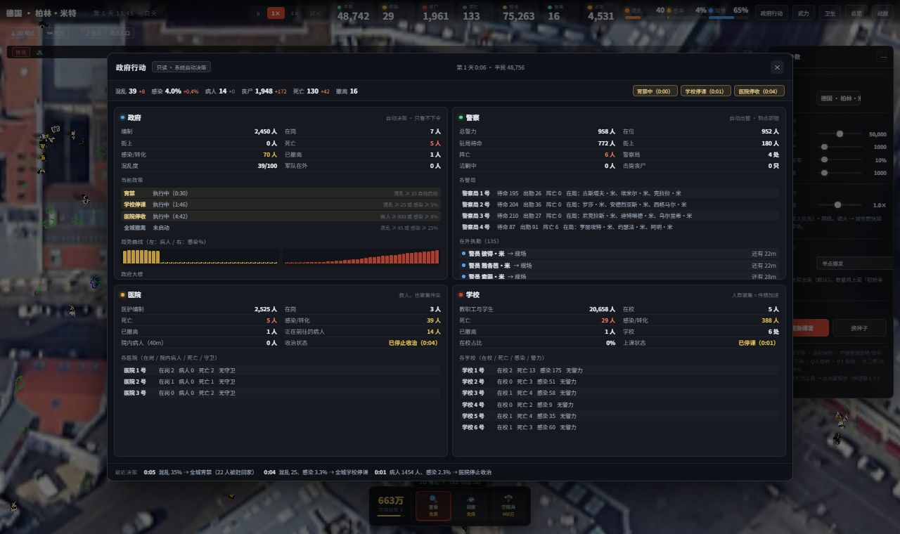
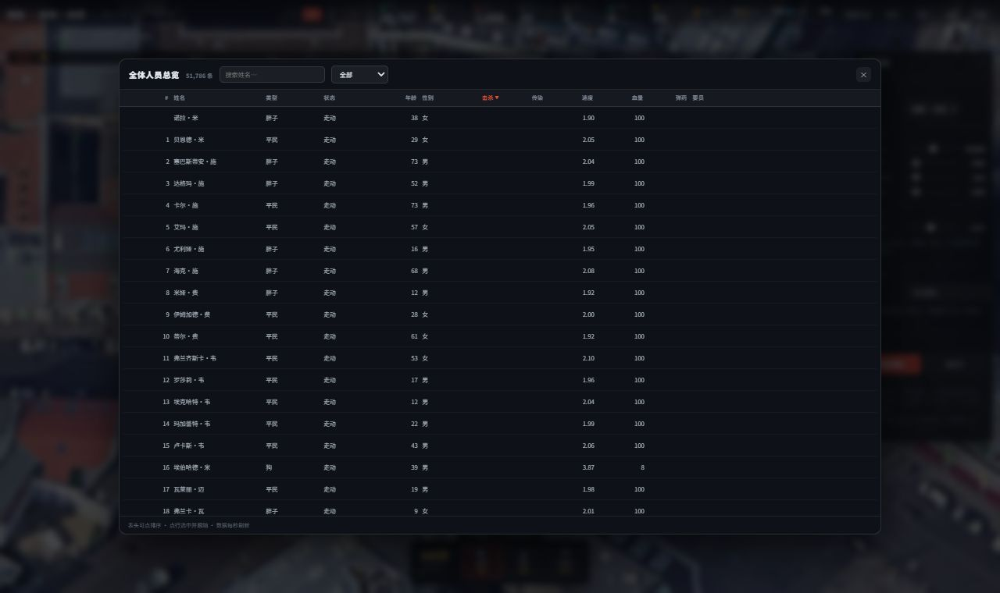
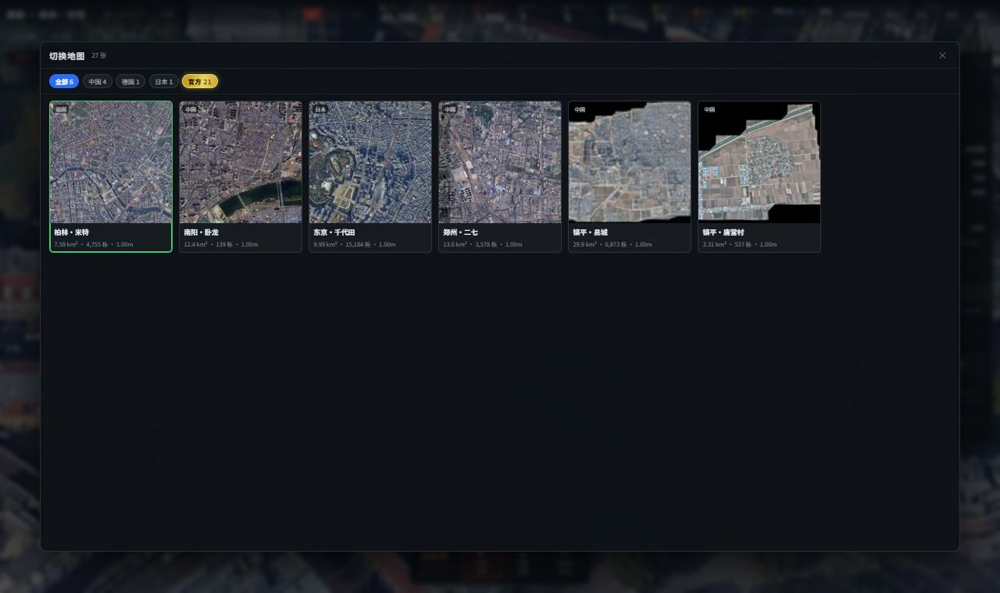
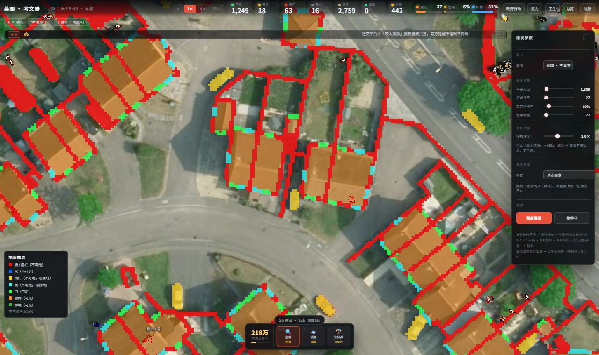

一个跑在浏览器里的大规模丧尸爆发模拟器：把整座城市的人、警察、军队、丧尸放进同一个 20 Hz 的模拟里，几万个体各自决定去哪、跟谁走、什么时候逃、什么时候开火。 用卫星影像当底图，按真实街道的碰撞几何行走 —— 但不是策略游戏，你只能"发动"一场爆发， 然后看着它自己演化。

一张正在运行的地图：柏林·米特，49,000 平民在街区里通勤，63 感染、133 死亡， 混乱度 40（顶部实时读数）。点开任意一个人就有档案卡，画面上那些小点就是每一个个体。
小时候，我在 iPhone 4 上第一次玩到了它。
那个年代的手游还很粗糙，但它不一样：地图是真实的街区，几百个小人各有各的走法， 你可以把丧尸丢进任何一条街，然后看着整座城市在几十分钟里崩掉。 我能盯着那个屏幕看一整个下午 —— 看着一个小区从"没人知道"到"全城狂奔"， 看着警察举枪、看着人被咬、看着一小队人往城外跑。
后来，它没有再更新。
系统一年年往上走，那个 App 停在原地，直到我换了一台新的 iPhone —— 它就这样 从我的生活里消失了，连一句告别都没有。再后来想找，只剩一些模糊的截图和几条论坛帖子。
这个项目，就是把那台手机上消失的东西，重新做出来。
本作品严格来说不是"基于原版制作"的。 它没有使用原版的任何一行代码，也不是对原版程序的移植或反编译复刻。
但它的全部设计思路与灵感来源，都来自原版：最基本的行走与感知逻辑、 感染扩散的规则、警察与军队的行为方式、界面的信息组织，以及21 张原作地图 与部分贴图素材。
换句话说：想法是他们的，代码是我们的。 我们只是用现代浏览器技术， 把当年那个 Flash 小游戏想做但受限于时代的事，重新实现了一遍。
那款游戏是 2009 年的 Flash 作品 Zombie Outbreak Simulator，以及它的续作 Class 3 Outbreak（2010）：
没有他们做的那个 Flash 小游戏，就没有这个项目。 本项目是对它的研究与重制， 所有原始美术、音效、地图瓦片的著作权归 Binary Space 所有。
原版手游是 Cocos2d-x + C++ 的原生 APK，没有开源。我们能读到它的"规则原文"， 靠的是社区的 3DS 移植项目 ZOS-3DS —— 它对 APK 做了一次完整反编译并移植到任天堂 3DS：
本项目从它身上读到的关键数据（没有复制它的代码）：
| 数据 | 用途 |
|---|---|
MapConfigFactory 的 20 条地图配置 |
15 张 Google 地图的精确经纬度、5 张内嵌图的尺寸 |
| 碰撞值语义（0/3/7/15/22/31/66/35） | 与 2009 版 355_*.bin 完全一致 |
| 队伍 / 物种 / 武器参数表 | 校准我们的数值 |
不是"你打丧尸"，而是一座城市如何在十几个小时里一步步垮掉。 下面这些系统互相咬合，任何一项调到极端，结局都会完全不同。
每个居民都有独立的姓名、年龄、性别、家庭、住址、工作地、职业，以及四维性格：
| 性格维度 | 影响 |
|---|---|
| 政府信任 | 高的人听到广播会配合撤离；低的人第一反应是"官方在骗人"，自己跑 |
| 家庭责任 | 决定他会不会为了找家人逆着人流往回走 |
| 意志 | 抵抗恐慌的能力，低的人一有风吹草动就崩 |
| 勇猛 | 敢不敢留下来持枪硬顶 |
性格不是纯随机：职业与年龄会先定一个基准，再加个人噪声 —— 警察不会普遍不信任政府， 退休老人不会普遍莽撞。所以把人点开，你会觉得"这个人挺合理"。
在此基础上派生出：
这是最复杂、也最像真实灾难的一块：

武力：城市里还剩多少把枪、多少发子弹、多少在岗警力，谁在开火、命中率如何 —— 一局打下来，弹药是会真的见底的。

卫生：医院的收治能力（床位数）、停尸压力、垃圾与水质、干净水源覆盖、 以及"停收"之后病人回流到社区的速度。城市不是直接被丧尸打垮的，是先被卫生系统拖垮的。
政府面板把城市拆成 政府 / 警察 / 医院 / 学校 四类设施，实时显示每处的 在校（在岗）人数、死亡、感染、警力，并按混乱度与感染率触发决策：
停课 → 停诊 → 宵禁 → 军队进驻 → 清剿 → 撤离令
每一步都会写进"最近决策"日志，也会立刻改变街上的行为 —— 停课之后，你会看到成群的学生往家跑。

政府行动（只读仪表盘）：左上角是城市总账（混乱 39、感染 4.0%、死亡 1,948）， 四张卡片分别是政府 / 警察 / 医院 / 学校 —— 每张都列出在岗人数、死亡、感染分化、 以及"当前决策"为什么还没触发（例如"混乱 ≥ 35 袭击商店"）。右下角是最近决策日志： 「混乱 35% → 全城宵禁（22 人挤回家）」「感染 1.3% → 医院停止收治」。

总览：几万人一张表，可按平民 / 警察 / 丧尸 / 感染 / 死亡 / 要员筛选， 可搜索姓名、按任意列排序，点一行镜头就飞过去跟着他。
跑马灯不是随机文案，每条都由实际局势触发；同一起事件还有多种说法（随机挑一条）， 所以每局看到的报纸口吻都不一样。零号病人模式有一整套独立文案： 前期完全不提"丧尸"，只有失联、发热门诊、不明原因死亡 —— 直到第一起咬人事件。
C）：每一格的墙/门/窗/水/林地可视化，用来检查碰撞层对不对27 张，全部自带碰撞几何与卫星/航拍底图：
| 来源 | 张数 | 说明 |
|---|---|---|
| 原版官方地图 | 21 | 从原版 SWF 与手游 APK 中提取：买断影像 + 内嵌碰撞层 + 精确坐标 |
| 自建城市 | 6 | 用 OSM 数据烘焙，覆盖亚洲、欧洲、北美不同尺度 |

每张图按自己的原始网格走：自建城市统一 1 m/格；从原版导入的按其资源算 （例如那张 4608 px ÷ 1152 格 × 0.11 m = 0.44 m/格 的图）。

地形图层：红=墙/栅栏，蓝=水，青=窗，绿=门，橙=室内，深绿=林地。
唯一要求：Python 3（只用来起一个本地静态服务器，游戏本身是纯前端）。
双击根目录的 生化危机模拟器.bat —— 它会自动重启服务、开浏览器、带上防缓存参数。
python3 工具/serve.py 8777
# 打开 http://127.0.0.1:8777/
⚠️ 不要用
python -m http.server：它不返回Cache-Control，浏览器会缓存 ES 模块， 改了代码却还在跑旧的。工具/serve.py专门对 html/js/css/json 发no-store。
| 键 | 作用 |
|---|---|
| 右键拖拽 / WASD | 平移 |
| 滚轮 | 缩放 |
| 中键拖拽 / Q E / R F | 旋转 / 俯仰 |
Tab |
2D 像素模式 ↔ 3D |
C |
地形图层 |
M / B |
卫星↔矢量 / 3D 建筑显隐 |
O |
总览表（可搜索、可排序） |
1–9 0 - = |
选指挥工具 → 点地面投放 |
| 点击人物 | 打开档案卡（姓名/年龄/职业/家庭/疫情状态/连线） |
| 项 | 实现 |
|---|---|
| 模拟规模 | 单地图上限 62,000 个体，20 Hz 固定步长（DT = 1/20） |
| 数据布局 | 全部 SoA（Struct of Arrays），Uint8Array / Float32Array 平铺，无对象分配 |
| 寻路 | 碰撞位网格 + 门场 BFS + 视线查询，WALK/SIGHT/INDOOR 位掩码 |
| 确定性 | mulberry32 种子随机，同种子同开局必定同样结局（有测试） |
| 渲染 | three.js；3D 点云 + 2D 图集精灵（四层实例化）。另有一个简单的 2D 像素视角可切（Tab），算是致敬原版，做得比较随意 |
| 音效 | 全程序化合成，无音频文件；事件驱动，100 m 范围，室内过滤高频 |
| 音乐 | 5 首原创曲目，随机循环，可在第二栏切换 |
| 大地图优化 | 远处个体降频（dt × 4），所有冷却计时统一走 cdt |
index.html 入口
js/ 模拟与渲染（sim.js 是核心）
sim.js 世界状态 + 每帧推进（SoA）
people.js 个体档案（纯函数，同一个人处处一致）
profiles.js 姓名/职业/街道/单位池（按国家切换）
citymeta.js 城市命名唯一来源
collision.js 碰撞层解码 + 门场
city.js 城市几何 + 卫星地面
agents.js 3D 点云
src/sprite/ 2D 像素渲染
gov.js / status.js 政府行动 / 武力卫生面板
overview.js 全体总览
report.js 结算报告
news.js 快讯跑马灯
music.js 背景音乐
css/ 样式（整体随窗口缩放）
数据库/cities/ 27 张地图：city.json + sat.jpg + thumb.jpg
assets/ 精灵图集 + 背景音乐
工具/ 本地服务器 + 两个测试
vendor/ three.js
node 工具/test_chain.mjs # 主链路：尸变链、爬起、行为 5 项
node 工具/test_sim.mjs # 性能 + 确定性（同种子必须同哈希）
数据库/cities/leicester、5 张内嵌图的影像与碰撞表、
以及项目历史中出现过的原版美术/音效）著作权归 Binary Space 所有，
仅作研究与学习用途，不得商用。这是一个粉丝性质的重制/研究项目，与 Binary Space 无隶属关系。 如果你喜欢这套玩法，请去玩一次原版 —— 它只有几百 KB，但你会看到我们所有设计的源头。